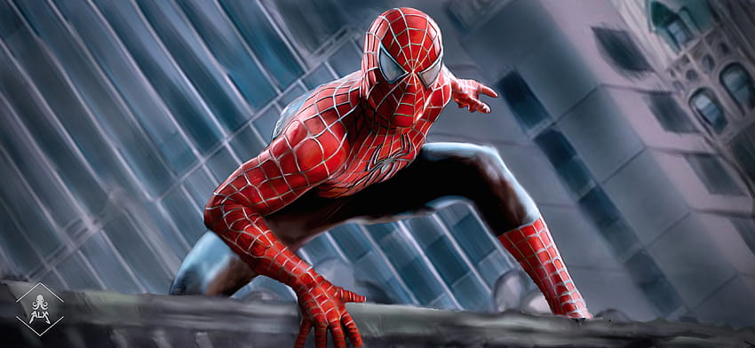

Spiderman 2 (2002) - Sam Raimi
"Spider-Man 2", dirigida por Sam Raimi y lanzada en 2004, es la secuela de la primera película de Spider-Man. En esta entrega, vemos a Peter Parker (Tobey Maguire) lidiando con su vida como estudiante y su responsabilidad de ser Spider-Man. A medida que trata de encontrar un equilibrio entre sus estudios y su vida personal, se enfrenta a un nuevo villano: el Doctor Octopus (Alfred Molina), un científico brillante que se convierte en una amenaza después de un experimento fallido.
La película se centra en temas como el sacrificio y la lucha por aceptar quién eres. Peter tiene que decidir si realmente quiere ser un héroe y qué significa eso para él y sus seres queridos. Es una de mis peliculas preferidas ya que fue una de las primeras sobre superheroes y desd entonces me volvi fan de este tipo de peliculas y tambien super fan del Hombre Araña.

Avengers Infinity War (2018)
 Avengers: Infinity War es una película de 2018 dirigida por los hermanos Russo, donde casi todos los superhéroes del Universo Marvel se juntan para enfrentarse a Thanos, el villano más temido hasta ese momento. Thanos está buscando las seis Gemas del Infinito, que le darían el poder de eliminar a la mitad de la vida en el universo solo con un chasquido. La trama va saltando entre diferentes equipos de héroes, como Iron Man, Thor, Doctor Strange, y los Guardianes de la Galaxia, cada uno intentando detener a Thanos a su manera.
Avengers: Infinity War es una película de 2018 dirigida por los hermanos Russo, donde casi todos los superhéroes del Universo Marvel se juntan para enfrentarse a Thanos, el villano más temido hasta ese momento. Thanos está buscando las seis Gemas del Infinito, que le darían el poder de eliminar a la mitad de la vida en el universo solo con un chasquido. La trama va saltando entre diferentes equipos de héroes, como Iron Man, Thor, Doctor Strange, y los Guardianes de la Galaxia, cada uno intentando detener a Thanos a su manera.
Esta película tiene un tono más serio comparado con las anteriores de los Avengers. Aunque sigue habiendo momentos divertidos y chistes, el peligro que enfrentan se siente real y mucho más cercano. A lo largo de la peli, vemos a nuestros héroes lidiar con dilemas difíciles, sacrificios, y una sensación de que todo puede salir mal. A medida que Thanos se va haciendo más poderoso, la tensión crece y las cosas se ponen cada vez más complicadas.
El final es lo que dejó a todo el mundo en shock: después de conseguir todas las gemas, Thanos hace el famoso chasquido y la mitad del universo, incluyendo a muchos de los héroes, desaparece. Este giro inesperado cambió por completo el tono de las películas de Marvel y dejó a los fans esperando con ansias Avengers: Endgame para ver cómo continuaba la historia.
The Last Of Us
The Last of Us, la serie de HBO estrenada en 2023, adapta el icónico videojuego en una historia postapocalíptica donde Joel y Ellie, una pareja improbable, deben recorrer un devastado Estados Unidos. Mientras enfrentan peligros tanto de los infectados como de otros sobrevivientes, su relación va evolucionando, siendo Ellie posiblemente la clave para salvar a la humanidad. La serie mantiene una gran fidelidad al juego, pero introduce nuevas capas de profundidad en los personajes y su desarrollo.
Con actuaciones destacadas de Pedro Pascal y Bella Ramsey, la serie equilibra la acción con momentos emocionales intensos, explorando temas de pérdida, dolor y esperanza en un mundo destruido. Además, su impresionante diseño de escenarios y una atmósfera sombría logran captar tanto a los fans del videojuego como a nuevos espectadores en busca de una narrativa cargada de emociones